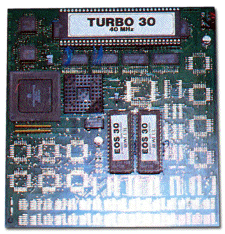

|
|
10.12 Turbo 20 / 30
Atari Turbo Beschleuniger
"Turbo 20" ist der Name dieses Beschleunigerboards der
Firma Makro C.D.E.
Auf dem Board kam eine MC68000 CPU mit satten 25 MHz Taktfrequenz
zum Einsatz. Ihr zur Seite stand ein 32 kB großer Cachespeicher.
Die Umschaltung auf Cache-Betrieb erfolgte per Jumper oder Schalter
sowie über eine entsprechende Software.
Auf Grund der hohen Taktrate kam es zu Timingproblemen, weswegen
das Board auch nur mit ausgeschaltetem Blitter lief, aber der war mit
dieser Geschwindigkeit sowieso überflüssig. Macro C.D.E.
lieferte den Turbo 20 Anfang 1992 für ca. 698,- DM an den
Endkunden aus.
Abbildung 1 - Turbo 020 Beschleuniger
Auf dem "Turbo 30" Board der Firma Makro C.D.E.
verrichtete ein MC68EC030 Prozessor mit 40 MHz seinen Dienst. Dieser
war zwar pinkompatibel zum MC68030, verfügte jedoch über
keine PMMU (Programmable Memory Management Unit). Eine MC68882 FPU
konnte ebenfalls auf dem Board eingesetzt werden, ein entsprechender
Steckplatz war vorhanden, ist im Bild oben allerdings nicht
bestückt.
Als Betriebssystem wurde für die Turbo 30 Karte ein
angepasstes KAOS-TOS verwendet. Alternativ konnte man auch hier das
TOS 2.06 einsetzen.
Das Turbo 30 Beschleunigerboard kostete Anfang 1992 etwa 2198,- DM
in der oben zu sehenden Version, also mit 40 MHz CPU und ohne FPU.
 Abbildung 2 - Turbo 030 Beschleuniger
Artikel von Bernd Maedicke
|

|
|